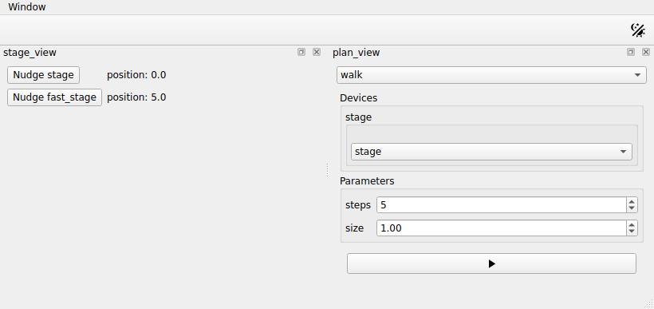

Building controls for a plan¶
In this tutorial you write a plan, and the window gains the controls to run
it: a list of the plans to choose from, and for the plan chosen a list of
stages, an input for each parameter, and a Run button. redsun builds
them from the plan, as a
plan widget. It continues from
Describing a device with a protocol.
You will write three components: one that offers a
plan, one that runs plans on a
RunEngine, and one that shows the
plan widget of the plan you choose. The last two never name the first. They
ask the session who offers plans, and the session answers.
Before you start¶
What you need
The project folder as you left it, and nothing else.
Open first_session.py, and add these imports below the ones it has:
from collections.abc import Mapping
from typing import Any
import bluesky.plan_stubs as bps
from bluesky.utils import MsgGenerator
from qtpy.QtWidgets import QComboBox, QStackedWidget, QVBoxLayout
from redsun import CallbackType, HasPlans, PlanEntry
from redsun.engine import RunEngine
from redsun.presenter.plan_spec import (
PlanSpec,
collect_arguments,
create_plan_spec,
resolve_arguments,
)
from redsun.view.qt.utils import PlanWidget, create_plan_widget
Nothing you wrote so far changes in this tutorial.
1. Offer a plan¶
Add a presenter below StageView. It holds a plan, called walk, and offers
it:
class StagePlans:
def __init__(self, name: str) -> None:
self.name = name
def walk(
self, stage: HasPosition, steps: int = 5, size: float = 1.0
) -> MsgGenerator[None]:
for _ in range(steps):
position = yield from bps.rd(stage.position)
yield from bps.mv(stage.position, position + size)
def plan_map(self) -> Mapping[str, PlanEntry]:
return {"walk": {"plan": self.walk}}
walk reads where a stage is with bps.rd, moves it
one step further with bps.mv, and repeats. Notice
that it is not async: the RunEngine does the
waiting. It takes its stage as a HasPosition, so it works with any stage of
the session.
plan_map is how a component offers plans: it returns each one under its
name, as a PlanEntry. A component with that method
satisfies the protocol HasPlans.
2. Run the plans¶
Add a second presenter below StagePlans. It has a RunEngine, and runs the
plans the session holds:
class PlanPresenter:
sig_started = Signal(str)
sig_finished = Signal()
def __init__(self, name: str, *, devices: DeviceMapping) -> None:
self.name = name
self.devices = devices
self.engine = RunEngine()
self.plans: dict[str, PlanEntry] = {}
self.specs: dict[str, PlanSpec] = {}
def setup(
self,
providers: Mapping[str, HasPlans],
callbacks: Mapping[str, CallbackType],
) -> None:
for component in providers.values():
self.plans.update(component.plan_map())
for plan, entry in self.plans.items():
self.specs[plan] = create_plan_spec(entry["plan"], self.devices)
for callback in callbacks.values():
self.engine.subscribe(callback)
@slot
def run(self, plan: str, values: dict[str, Any]) -> None:
resolved = resolve_arguments(self.specs[plan], values, self.devices)
args, kwargs = collect_arguments(self.specs[plan], resolved)
self.sig_started.emit(plan)
future = self.engine(self.plans[plan]["plan"](*args, **kwargs))
future.add_done_callback(lambda _: self.sig_finished.emit())
setup runs once every component exists, and the session fills its
parameters. providers asks for every component that satisfies HasPlans,
so PlanPresenter receives StagePlans without naming it. callbacks asks
for the components that follow a plan while it runs; the next tutorial adds
one. create_plan_spec
describes each plan from its signature.
run receives the name of a plan and the values the user chose. The user
chooses a stage by its name, so
resolve_arguments puts the
device in its place, and
collect_arguments orders the
values as the plan takes them. The engine starts the plan without waiting for
it to end, and the presenter sends sig_finished when it has.
3. Build the controls¶
Add a view below PlanPresenter. It asks the same question, and builds a
plan widget for each plan it receives. It holds them all, and shows the one
of the plan chosen in its list:
class PlanView(QWidget):
placement: Placement = Dock("right")
sig_run = Signal(str, dict)
def __init__(self, name: str, parent: QWidget) -> None:
super().__init__(parent)
self.name = name
self.chooser = QComboBox()
self.pages = QStackedWidget()
self.chooser.currentIndexChanged.connect(self.pages.setCurrentIndex)
layout = QVBoxLayout(self)
layout.addWidget(self.chooser)
layout.addWidget(self.pages)
self.widgets: dict[str, PlanWidget] = {}
def setup(self, providers: Mapping[str, HasPlans], devices: DeviceMapping) -> None:
for component in providers.values():
for entry in component.plan_map().values():
self.add_plan(create_plan_spec(entry["plan"], devices))
def add_plan(self, spec: PlanSpec) -> None:
widget = create_plan_widget(
spec, run_callback=lambda: self.ask_to_run(spec.name)
)
self.widgets[spec.name] = widget
self.chooser.addItem(spec.name)
self.pages.addWidget(widget.group_box)
def ask_to_run(self, plan: str) -> None:
self.setEnabled(False)
self.sig_run.emit(plan, self.widgets[plan].parameters)
@slot
def on_finished(self) -> None:
self.setEnabled(True)
create_plan_widget builds the
plan widget from the description of the plan. The view disables itself while
a plan runs, and enables itself again when the presenter says the plan has
finished.
redsun does not ship these two components. How plans are run and shown is
for each application to decide, and you write it once.
4. Add them to the session¶
Add the highlighted lines:
class FirstSession(QtSession):
config = "session.yaml"
stage: AsDevice[MyStage]
fast_stage: AsDevice[FastStage]
stage_ctrl: AsPresenter[StagePresenter]
stage_plans: AsPresenter[StagePlans]
plan_ctrl: AsPresenter[PlanPresenter]
stage_view: AsView[StageView]
plan_view: AsView[PlanView]
def wire(self) -> Iterator[Link]:
yield self.stage_view.sig_nudge, self.stage_ctrl.nudge
yield self.stage.position, self.stage_view.show_reading
yield self.fast_stage.position, self.stage_view.show_reading
yield self.plan_view.sig_run, self.plan_ctrl.run
yield self.plan_ctrl.sig_finished, self.plan_view.on_finished
if __name__ == "__main__":
FirstSession().run()
No link joins stage_plans to the other two. The session passed it to them
in setup.
Run the script:

The view on the right starts with the list of the plans, which holds walk
alone for now. Below it is the plan widget of walk: a list with the two
stages, an input for steps and one for size with the defaults you wrote,
and a Run button.
The list of stages holds the devices that satisfy HasPosition. That check
is made while the program runs, which is what runtime_checkable allowed.
5. Run the plan¶
Leave stage selected in the list of stages and press Run. The view of
the plans greys out, the position of stage counts up on the left, and the
view comes back: the stage has moved five steps of one millimetre, to 5.0.
walk moves by its own size. The step of session.yaml belongs to the
buttons of the stages.
If a plan fails, the terminal says why, and the view comes back.
6. Change the parameters¶
Choose fast_stage in the list of stages, set steps to 10 and size to
0.5, and press Run again. This time the position of fast_stage counts
up, by half a millimetre at a time.
You did not write any code for the list or the inputs: they follow the
signature of walk.
The whole script
"""The session built in the "Building controls for a plan" tutorial."""
from __future__ import annotations
from collections.abc import Iterator, Mapping # noqa: TC003
from typing import Any, Protocol, runtime_checkable
import bluesky.plan_stubs as bps
from bluesky.protocols import Reading # noqa: TC002
from bluesky.utils import MsgGenerator # noqa: TC002
from ophyd_async.core import SignalRW, StandardReadable, soft_signal_rw
from psygnal import Signal
from qtpy.QtWidgets import (
QComboBox,
QFormLayout,
QLabel,
QPushButton,
QStackedWidget,
QVBoxLayout,
QWidget,
)
from redsun import (
AsDevice,
AsPresenter,
AsView,
CallbackType,
DeviceMapping,
DevicesOf,
HasPlans,
Link,
Placement,
PlanEntry,
slot,
)
from redsun.engine import RunEngine
from redsun.presenter.plan_spec import (
PlanSpec,
collect_arguments,
create_plan_spec,
resolve_arguments,
)
from redsun.qt import Dock, QtSession
from redsun.view.qt.utils import PlanWidget, create_plan_widget
class MyStage(StandardReadable):
def __init__(self, name: str = "", *, units: str = "mm") -> None:
with self.add_children_as_readables():
self.position = soft_signal_rw(float, units=units)
super().__init__(name=name)
class FastStage(StandardReadable):
def __init__(self, name: str = "", *, units: str = "mm") -> None:
with self.add_children_as_readables():
self.position = soft_signal_rw(float, initial_value=5.0, units=units)
self.speed = soft_signal_rw(float, initial_value=10.0)
super().__init__(name=name)
@runtime_checkable
class HasPosition(Protocol):
position: SignalRW[float]
class StagePresenter:
def __init__(
self, name: str, *, stages: DevicesOf[HasPosition], step: float = 1.0
) -> None:
self.name = name
self.stages = stages
self.step = step
@slot
async def nudge(self, stage: str) -> None:
position = await self.stages[stage].position.get_value()
await self.stages[stage].position.set(position + self.step)
class StageView(QWidget):
placement: Placement = Dock("left")
sig_nudge = Signal(str)
def __init__(self, name: str, parent: QWidget) -> None:
super().__init__(parent)
self.name = name
self.rows = QFormLayout(self)
self.labels: dict[str, QLabel] = {}
def add_row(self, stage: str) -> None:
button = QPushButton(f"Nudge {stage}")
button.clicked.connect(lambda: self.sig_nudge.emit(stage))
self.labels[stage] = QLabel()
self.rows.addRow(button, self.labels[stage])
@slot
def show_reading(self, reading: dict[str, Reading[float]]) -> None:
for signal, entry in reading.items():
stage = signal.removesuffix("-position")
if stage not in self.labels:
self.add_row(stage)
self.labels[stage].setText(f"position: {entry['value']}")
class StagePlans:
def __init__(self, name: str) -> None:
self.name = name
def walk(
self, stage: HasPosition, steps: int = 5, size: float = 1.0
) -> MsgGenerator[None]:
for _ in range(steps):
position = yield from bps.rd(stage.position)
yield from bps.mv(stage.position, position + size)
def plan_map(self) -> Mapping[str, PlanEntry]:
return {"walk": {"plan": self.walk}}
class PlanPresenter:
sig_started = Signal(str)
sig_finished = Signal()
def __init__(self, name: str, *, devices: DeviceMapping) -> None:
self.name = name
self.devices = devices
self.engine = RunEngine()
self.plans: dict[str, PlanEntry] = {}
self.specs: dict[str, PlanSpec] = {}
def setup(
self,
providers: Mapping[str, HasPlans],
callbacks: Mapping[str, CallbackType],
) -> None:
for component in providers.values():
self.plans.update(component.plan_map())
for plan, entry in self.plans.items():
self.specs[plan] = create_plan_spec(entry["plan"], self.devices)
for callback in callbacks.values():
self.engine.subscribe(callback)
@slot
def run(self, plan: str, values: dict[str, Any]) -> None:
resolved = resolve_arguments(self.specs[plan], values, self.devices)
args, kwargs = collect_arguments(self.specs[plan], resolved)
self.sig_started.emit(plan)
future = self.engine(self.plans[plan]["plan"](*args, **kwargs))
future.add_done_callback(lambda _: self.sig_finished.emit())
class PlanView(QWidget):
placement: Placement = Dock("right")
sig_run = Signal(str, dict)
def __init__(self, name: str, parent: QWidget) -> None:
super().__init__(parent)
self.name = name
self.chooser = QComboBox()
self.pages = QStackedWidget()
self.chooser.currentIndexChanged.connect(self.pages.setCurrentIndex)
layout = QVBoxLayout(self)
layout.addWidget(self.chooser)
layout.addWidget(self.pages)
self.widgets: dict[str, PlanWidget] = {}
def setup(self, providers: Mapping[str, HasPlans], devices: DeviceMapping) -> None:
for component in providers.values():
for entry in component.plan_map().values():
self.add_plan(create_plan_spec(entry["plan"], devices))
def add_plan(self, spec: PlanSpec) -> None:
widget = create_plan_widget(
spec, run_callback=lambda: self.ask_to_run(spec.name)
)
self.widgets[spec.name] = widget
self.chooser.addItem(spec.name)
self.pages.addWidget(widget.group_box)
def ask_to_run(self, plan: str) -> None:
self.setEnabled(False)
self.sig_run.emit(plan, self.widgets[plan].parameters)
@slot
def on_finished(self) -> None:
self.setEnabled(True)
class FirstSession(QtSession):
config = "session.yaml"
stage: AsDevice[MyStage]
fast_stage: AsDevice[FastStage]
stage_ctrl: AsPresenter[StagePresenter]
stage_plans: AsPresenter[StagePlans]
plan_ctrl: AsPresenter[PlanPresenter]
stage_view: AsView[StageView]
plan_view: AsView[PlanView]
def wire(self) -> Iterator[Link]:
yield self.stage_view.sig_nudge, self.stage_ctrl.nudge
yield self.stage.position, self.stage_view.show_reading
yield self.fast_stage.position, self.stage_view.show_reading
yield self.plan_view.sig_run, self.plan_ctrl.run
yield self.plan_ctrl.sig_finished, self.plan_view.on_finished
if __name__ == "__main__":
FirstSession().run()
What you built¶
Controls that run a plan on the stage you choose, with the number of steps and their size you type in. The window shows the stage moving while the plan runs. Only the view of the plans is greyed out meanwhile. Any component that offers a plan adds an entry to the list of the plans, with no change to the presenter or the view you wrote here.
Next steps¶
- Acquiring images is the next tutorial: it adds a camera, and a component that offers a plan to acquire with it.
- Questions explains how a component asks the session what it holds.
- How presenters run plans covers plans that run until they are stopped, and actions the user takes while they run.
- How the Qt widgets of redsun work lists what a plan widget can hold.